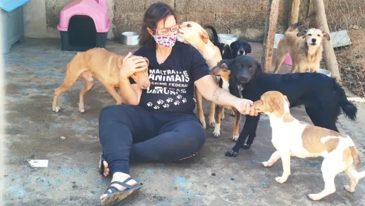

Resgate
Resgate de Emergência
Equipe disponível 24 horas para resgatar animais em situação de risco, abandono ou maus-tratos. Atuamos em parceria com bombeiros e polícia ambiental.
450+
Resgates em 2024
98%
Taxa de recuperação
Impacto do Projeto
- Salvamento de animais em situação crítica
- Atendimento veterinário imediato
- Reabilitação física e comportamental